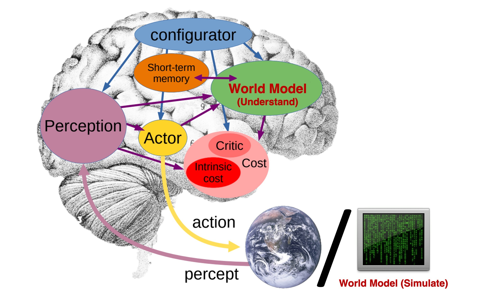
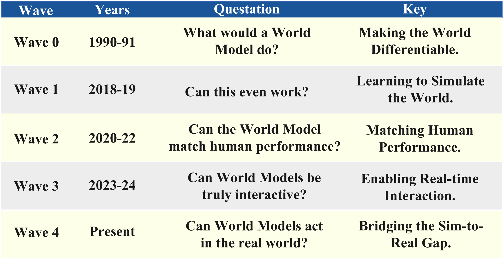

Find your way
through world models.
Definitions, reading paths, and the questions behind the papers.
Read the field from its foundations to its open problems.
15 chapters · From the curated README
No chapters found.
Try “JEPA”, “planning”, or “evaluation”.
| If you are interested in... | Start with |
|---|---|
| The definition and scope of world models | Definition and Scope, Taxonomic Overview |
| Classic foundations and cognitive origins | Mind World Models, Latent Dynamics Models |
| Video, games, and interactive simulation | Game & Interactive World Simulation, General Video World Models, Persistent Narrative & Multi-Shot Video |
| Autonomous driving world models | Autonomous Driving — Generative, Occupancy & BEV Representations, Closed-Loop Simulation & Evaluation |
| Robotics, VLA, and World Action Models | Embodied AI & Robotics, VLA & WAM, World-Model-Guided Planning |
| Benchmarks, datasets, and open toolkits | Evaluation Dimensions, Benchmarks & Evaluation, Community Resources & Open Repositories |
| A guided reading order | Reading Roadmap, Historical Timeline, Architecture Cheat Sheet |
| Terminology, labs, and open problems | Glossary, Labs, Companies & Open Stacks, Open Problems, FAQ |
A short working definition
A world model is an internal predictive model of an environment that helps an agent answer:
What will happen if I act, wait, intervene, or imagine an alternative future?
That definition is intentionally broader than model-based RL, but narrower than "any model that understands the world".
World model vs. nearby concepts
| Concept | Core question | Typical output |
|---|---|---|
| world model | what happens next under state, action, or intervention? | future observations, latent states, occupancy, trajectories, or executable rollouts |
| simulator | can the environment be replayed or executed? | environment transitions, often hand-built or learned |
| planner / policy | what should the agent do? | actions, plans, control sequences |
| perception model | what is in the scene now? | labels, detections, depth, segmentation |
A practical boundary
A paper is strongest as a world-model entry when it does at least two of the following:
- models state,
- predicts state evolution under action or intervention,
- supports imagination, planning, evaluation, or controllable simulation.
Inclusion heuristics
- Prefer primary sources: arXiv, conference/journal pages, official project pages, and official repositories.
- Prefer papers with an explicit dynamics / future / intervention component over static perception-only work.
- Include adjacent work only when it materially improves the understanding of world models: latent planning, JEPA-style predictive representation learning, embodied evaluation, or physically grounded simulation.
- When a paper is domain-specific, place it by its main technical role first and by domain second.
Deliberate non-goals
- This is not a generic list of video generation, VLA, or autonomous driving papers.
- Pure perception, segmentation, or forecasting papers without a genuine world-modeling role are deprioritized.
- Blog posts and secondary commentary are included selectively and are kept separate from the paper taxonomy.
Navigate by paradigm, then by domain
The taxonomy has one deliberate spine:
- Decide what kind of model you care about. Synthesizing plausible futures → 1 · Generative. Learning structured internal state without pixel decoding → 2 · Representational. Coupling a world model to acting, planning, and evaluation → 3 · Agentic. Cognitive and biological grounding → 0 · Mind World Models.
- Then narrow by domain or mechanism inside that paradigm (e.g. 1.2 driving, 2.2 JEPA, 3.3 closed-loop evaluation).
- When a paper is domain-specific, it is filed by its main technical role first and domain second. For example, JEPLO and GLAM live under JEPA (§2.2) because they predict latent representations, with robotics domains recorded on each entry.
The Start Here table maps common intents directly to sections. The Taxonomic Overview shows the full tree at a glance.
What the badges mean
| Badge | Meaning |
|---|---|
arXiv | The arXiv paper; the badge label carries the full arXiv ID, so you can search the page for an ID you already know. |
GitHub | Official code or the official project repository. Unofficial reimplementations are not badged. |
Project | Official project page. |
HuggingFace | Official model, dataset, space, or leaderboard. |
Blog | Technical blog post or official research-lab write-up. |
Paper | Non-arXiv primary source: DOI, OpenReview, or proceedings page. |
Tables vs. bullets
Two entry formats coexist by design:
- Tables are used where a family is mature enough to compare on fixed columns: the RSSM / Dreamer family, MBRL, Surveys, Benchmarks, and Community Resources.
- Bullets with a one-line rationale are used in fast-moving areas where entries do not yet share a comparable schema. The indented
>line under each bullet states, factually, why the entry is in scope.
Finding a paper you already know
Search the rendered page for the arXiv ID. Every arXiv badge label carries the full ID (2408.14837, 2608.14530, …), so an ID search is unambiguous even when titles or acronyms collide.
How a curation pass works
The header date is the last full pass, not the last commit. A pass means: (1) new in-scope papers since the previous date were considered against Definition and Scope; (2) arXiv IDs and metadata were checked; (3) duplicate and badge checks were run; (4) List Statistics were recomputed with node scripts/check-list-stats.mjs --update README.md; (5) search coverage and decisions were recorded under curation/. Structural changes are logged in News.
Finding code and reproducible stacks
- Skim any section for
GitHubbadges — they always mean official code. - For end-to-end stacks (training recipes, checkpoints, serving), go straight to Open Toolkits & Platforms, which collects Cosmos, minWM, Matrix-Game, Genie Envisioner, DreamerV3, TD-MPC2, V-JEPA 2, OpenDWM, and others.
- Leaderboards and datasets have their own subsections under Community Resources.
What this list is not
This is not a video-generation dump. A video model appears only when it explicitly targets control, causality, memory, or world-model conversion — that boundary is stated at the top of §1.6 General Video World Models & Rollout Backbones and enforced even more tightly in §1.7 Persistent Narrative & Multi-Shot Video, which requires documented state, memory, or structured planning that crosses a shot boundary. Length, resolution, visual quality, and identity consistency alone never qualify a paper. If you want a broad video-generation list, several are linked in Curated Lists & Awesome Repos.
World Models
│
├── 0. Mind World Models (Cognitive / Biological Grounding)
│ ├── 0.1 Cognitive & neuroscientific origins (Craik → Tolman → predictive coding → JEPA)
│ └── 0.2 Formative computational papers (Schmidhuber 1990 → Dyna → DreamerV3)
│
├── 1. Generative World Models [focus: synthesizing plausible futures]
│ │
│ ├── By Domain / Task
│ │ ├── 1.1 Game & Interactive Simulation
│ │ │ 1.1.1 Pixel-space engines (GAN / CNN / diffusion)
│ │ │ 1.1.2 Autoregressive transformers
│ │ │ 1.1.3 Memory-augmented & long-horizon game worlds
│ │ ├── 1.2 Autonomous Driving
│ │ │ 1.2.1 Multi-view camera · 1.2.2 Occupancy / BEV
│ │ │ 1.2.3 LiDAR / 4D points · 1.2.4 Language-guided
│ │ ├── 1.3 Embodied AI & Robotics
│ │ │ 1.3.1 Manipulation · 1.3.2 Navigation · 1.3.3 Locomotion
│ │ │ 1.3.4 VLA & World Action Models (WAM) · 1.3.5 Real2Sim
│ │ ├── 1.4 3D / 4D Scene Generation
│ │ ├── 1.5 Scientific & Physical World Modeling
│ │ ├── 1.6 General Video World Models & Rollout Backbones
│ │ └── 1.7 Persistent Narrative & Multi-Shot Video World Models
│ │
│ └── By Architecture (cross-domain) — see Architecture Cheat Sheet
│ ├── Diffusion video WM
│ ├── Autoregressive transformer WM
│ ├── RSSM / Dreamer · JEPA
│ ├── Occupancy / BEV · 3DGS / NeRF
│ └── LLM text WM · World Action Models
│
├── 2. Representational World Models [focus: learning structured internal state]
│ ├── 2.1 Latent Dynamics Models (RSSM / Dreamer)
│ ├── 2.2 Joint Embedding Predictive Architectures (JEPA)
│ ├── 2.3 Occupancy & BEV Representations
│ ├── 2.4 Multimodal, Text, Acoustic & Memory-Oriented World Models
│ └── 2.5 Symbolic & Knowledge-Graph World Models
│
└── 3. Agentic World Models [focus: acting, planning, decision-making]
│ (= World Foundation Model + Agentic Framework)
├── 3.1 Model-Based Reinforcement Learning (MBRL)
├── 3.2 World-Model-Guided Planning
├── 3.3 Closed-Loop Simulation & Evaluation
├── 3.4 Multi-Agent World Models
├── 3.5 Safety-Aware Agentic World Models
└── 3.6 LLM / VLM / GUI Agents with World Models
Working definitions
| Term | Definition |
|---|---|
| Mind World Model | The biological and cognitive intuition that an intelligent system carries an internal model of the world and uses it for prediction, imagination, and counterfactual reasoning. |
| Generative World Model | Predicts or synthesizes plausible future observations, often pixels, video, occupancy, or point clouds. |
| Representational World Model | Predicts future state or latent structure without requiring photorealistic decoding. |
| World Foundation Model (WFM) | A pretrained model of environment structure and dynamics that can support simulation, planning, forecasting, or data generation across downstream tasks. |
| JEPA | A joint-embedding predictive architecture: predict future or missing representations, not pixels. The non-generative counterpoint to Section 1; see §2.2. |
| World Action Model (WAM) | A model that jointly predicts futures and actions in one backbone, typically initialized from video generation. Distinct from a VLA, which maps observation + language directly to actions. See §1.3.4. |
| Agentic World Model | A WFM coupled with action selection, planning, memory, tool use, or policy optimization in a closed loop. |
Three tracks. Each step names papers that are already entries in this list; follow the section link to find full citations, badges, and code.
Track 1 — Newcomer (build the concept from zero)
Goal: understand what a world model is, where the idea comes from, and what the modern instantiations look like — roughly 7 stops.
- The definition. Read Definition and Scope and the working definitions under Taxonomic Overview. Ten minutes that prevent months of terminology confusion.
- The seminal paper. World Models (Ha & Schmidhuber, 2018) and its NeurIPS version Recurrent World Models Facilitate Policy Evolution — in §0.1–0.2. Learn V-M-C: compress perception, predict in latent space, train a controller entirely inside the dream.
- Latent dynamics done right. PlaNet (RSSM) and Dream to Control (Dreamer), then skim DreamerV2/V3 — in §0.2 and the comparison table in §2.1. This is the reinforcement-learning lineage of the field.
- The generative-interactive turn. Genie: Generative Interactive Environments, then the Genie 2 and Genie 3 lab reports — in §1.1.2. Latent actions learned from unlabeled video; playable worlds from a prompt.
- The non-generative counterpoint. V-JEPA (and LeCun's A Path Towards Autonomous Machine Intelligence, §0.1) — in §2.2. Predict representations, not pixels; understand why this is an argument, not just an architecture.
- One driving paper. GAIA-1 — in §1.2.1. The first large-scale autoregressive driving world model; sets up everything that follows in §1.2. (OccWorld in §1.2.2 is the natural second read for the geometry-first side.)
- One robotics paper. UniSim: Learning Interactive Real-World Simulators — in §1.3.1. A learned action-conditioned simulator of real-world interaction; the conceptual bridge to WAMs.
After these seven, the Historical Timeline and Architecture Cheat Sheet below will read as review rather than news.
Track 2 — Practitioner (build something this quarter)
Goal: pick a stack with open weights or code and a known deployment story. All of these have GitHub badges and live under Open Toolkits & Platforms plus their taxonomy homes.
| Stack | What it gives you | Where |
|---|---|---|
| NVIDIA Cosmos (incl. Cosmos-Predict2.5, Cosmos 3) | Open world-foundation-model platform for Physical AI: pretrained video WFMs, post-training recipes, driving pipeline (Cosmos-Drive-Dreams) | Toolkits, §1.6 |
| DreamerV3 | Reference latent-dynamics MBRL agent; single hyperparameter set across domains; the default baseline for imagination-based RL | §2.1, §3.1 |
| TD-MPC2 | Scalable latent MPC for continuous control (104 tasks); decoder-free, robust defaults | §2.1, §1.3.3 |
| V-JEPA 2 | Self-supervised video representation + action-conditioned latent planning; zero-shot manipulation recipes; official checkpoints on HuggingFace | §2.2, §1.3.4 |
| Matrix-Game (1.0 → 3.0) | Open interactive game-world stack: real-time streaming rollouts, long-horizon memory in 3.0 | §1.1.1, Toolkits |
| Genie Envisioner | Unified robotic-manipulation world platform: imagination, policy evaluation, and data generation in one loop (AgiBot) | §1.3.1, Toolkits |
Supporting picks, depending on the problem: minWM and Causal Forcing for converting a video backbone into a real-time interactive world model (§1.6); OpenDWM for driving; stable-worldmodel and Nano World Models for controlled research baselines (all under Toolkits).
Track 3 — Researcher (find the frontier)
- Surveys first. From the Surveys & Position Papers tables: Understanding World or Predicting Future? for the broad taxonomy, Is Sora a World Simulator? for the generative debate, World Action Models: A Survey and World Action Models: The Next Frontier for the WAM consolidation, plus the domain surveys for driving and embodied AI.
- Theory and safety. The Safety & Theory table (When Does LeJEPA Learn a World Model?, General Agents Contain World Models, Critiques of World Models, identifiability and value-equivalence results in §2.1–§2.2) and §3.5 Safety-Aware Agentic World Models for the attack-surface literature.
- Benchmarks. Read Evaluation Dimensions below as the index, then go metric-shopping in Benchmarks & Evaluation. Pay attention to closed-loop utility benchmarks (World-in-World, WorldGym, WorldEval) versus rollout-quality benchmarks — they disagree, and that disagreement is a research topic.
- Open problems. The Open Problems section below distills what the 2025–2026 surveys actually argue about, with entry points into the taxonomy for each.
Two eras, compact by design. Every named work below is an entry in this list — follow the section link for the full citation, badges, and one-line rationale.
Cognitive and computational origins (1943–2018)
| Year | Milestone | Why it matters |
|---|---|---|
| 1943 | Craik, The Nature of Explanation — §0.1 | First articulation of the mind carrying a "small-scale model" of external reality used to try out alternatives before acting. |
| 1948 | Tolman, Cognitive Maps in Rats and Men — §0.1 | Latent spatial representations inferred from behavior; the empirical ancestor of learned internal state. |
| 1978 | O'Keefe & Nadel, The Hippocampus as a Cognitive Map — §0.1 | Place cells as the neural substrate of Tolman's map; foundation for spatial world-model research. |
| 1983 | Johnson-Laird, Mental Models — §0.1 | Reasoning over constructed internal models of situations rather than formal logic. |
| 1989 | Occupancy Grids (Elfes) — §0.1 | First computational spatial world model for a physical agent; ancestor of §2.3. |
| 1990 | Schmidhuber, Making the World Differentiable — §0.2 | Recurrent controller–model architecture cited by Ha & Schmidhuber (2018) as the direct ancestor of learned neural world models. |
| 1991 | Sutton, Dyna — §0.2 | Learning, planning, and reacting integrated through imagined experience; "Dyna-style rollouts" survive in the MBRL table. |
| 1993 | Successor Representations (Dayan) — §0.1 | Encode future occupancy of states rather than immediate reward — predictive representation before deep learning. |
| 1995 | Wolpert et al., internal models for sensorimotor integration — §0.1 | Forward models predict sensory consequences of motor commands — the neuroscience blueprint for action-conditioned prediction. |
| 1999 | Rao & Ballard, predictive coding in visual cortex — §0.1 | Concrete computational predictive-coding model; higher areas predict lower-level activity. |
| 2010 | Friston, free-energy principle — §0.1 | The brain as a hierarchical prediction-error-minimizing machine. |
| 2011 | PILCO — §0.2 | Gaussian-process dynamics with analytic uncertainty; the data-efficiency reference point for model-based policy search. |
| 2013 | Battaglia et al., mental simulation / intuitive physics — §0.1 | Humans run fast approximate physics simulations as a world model. |
| 2015 | E2C and Action-Conditional Video Prediction — §0.2 | Latent dynamics from pixels, and deep action-conditioned next-frame prediction at Atari scale. |
| 2017 | VPN, I2A, Successor Features — §0.2 | Value-equivalent abstract models, imagination-augmented agents, and deep successor representations. |
| 2018 | World Models (Ha & Schmidhuber) + NeurIPS version; TDM; GQN — §0.1–0.2 | The term enters modern ML: V-M-C, training a controller inside the dream; also goal-conditioned implicit dynamics and neural scene rendering. |
The scaling era (2018–2026)
| Year | Milestones (all entries in this list) | Where |
|---|---|---|
| 2019 | PlaNet (ICML) introduces RSSM and latent-space planning; MBPO (NeurIPS) formalizes Dyna-style model-based policy optimization; DPI-Net (ICLR) brings graph-network particle physics. | §0.2, §3.1, §1.5.1 |
| 2020 | Dreamer (ICLR) trains actor-critic fully in imagination; MuZero (Nature) plans with a learned value-equivalent dynamics model, no rules given. | §0.2, §3.1 |
| 2021 | DreamerV2 (ICLR) makes discrete latents work; EfficientZero (NeurIPS) reaches Atari sample-efficiency milestones; Pathdreamer (ICCV) is an early visual world model for navigation. | §0.2, §3.1, §1.3.2 |
| 2022 | LeCun's position paper proposes JEPA-centered autonomous machine intelligence; TD-MPC (ICML) fuses TD learning with latent MPC; Iso-Dream (NeurIPS) disentangles controllable dynamics. | §0.1, §2.1 |
| 2023 | DreamerV3 generalizes across domains with fixed hyperparameters; I-JEPA (CVPR) lands the JEPA program in vision; GAIA-1 (Wayve) is the first large-scale generative driving world model; UniPi turns text-guided video generation into policies; Pangu-Weather (Nature) and GraphCast (Science) show learned earth-system dynamics beating traditional simulation. | §0.2, §2.2, §1.2.1, §1.3.4, §1.5.2 |
| 2024 | OpenAI frames Sora as a "world simulator", igniting the debate (Is Sora a World Simulator? survey; PhyWorld physical-law critique); Genie learns latent actions from unlabeled video; GameNGen runs DOOM in a diffusion model in real time; Oasis generates Minecraft token-by-token; V-JEPA (ICLR) and TD-MPC2 (ICLR) mature the representational side; OccWorld (ECCV) and Copilot4D (ICLR) establish occupancy/LiDAR world models; Genie 2 (December) generates playable 3D worlds from one image; DIAMOND (NeurIPS) shows diffusion world models paying off for RL. | Surveys, §1.5.1, §1.1, §2.2, §2.1, §1.2.2–1.2.3, §3.1 |
| 2025 | NVIDIA Cosmos ships open world foundation models for Physical AI (January), extended by Cosmos-Predict2.5 and Cosmos-Drive-Dreams; GAIA-2 adds controllable multi-view driving; V-JEPA 2 demonstrates zero-shot robot manipulation from internet-scale video pretraining; Matrix-Game and Matrix-Game 2.0 open-source real-time interactive game worlds; Genie 3 (August) reaches real-time 24 fps text-to-world generation; Genie Envisioner unifies robot imagination, evaluation, and data generation; HunyuanWorld 1.0 generates explorable 3D worlds; DreamerV4 scales agent-side world-model training; PAN targets general long-horizon interactive simulation. | Toolkits, §1.2.1, §2.2, §1.1, §1.3.1, §1.4.1, §3.1, §1.6 |
| 2026 | Cosmos 3 unifies language, image, video, audio, and action in one omnimodal WFM family; HY-World 2.0 and Matrix-Game 3.0 push open 3D/interactive stacks; V-JEPA 2.1 densifies JEPA video features; the World Action Model (WAM) wave consolidates — dedicated surveys (World Action Models: A Survey; The Next Frontier), open stacks (DreamZero), and a dense §1.3.4 of video-action models; memory, evaluation, and safety become first-class subfields (§1.1.3, §3.3, §3.5). | §1.6, §1.4.1, §1.1.3, §2.2, §1.3.4, Surveys, §3.3, §3.5 |
Eight architecture families that account for nearly every entry in this list. "State" is what the model carries between steps; "prediction target" is what it is trained to output; "failure modes" are the documented ones, not hypotheticals. Canonical papers are all entries here — follow the section links for citations and code.
| Family | State | Prediction target | Action conditioning | Strengths | Failure modes | Canonical papers (in this list) |
|---|---|---|---|---|---|---|
| Diffusion video WM | Implicit — a window of recent frames or video latents | Future frames (pixel or VAE-latent), denoised | Actions/trajectories/text injected as conditioning; often weak by default | Visual fidelity; inherits video-generation pretraining; multimodal futures | Compounding error over long rollouts; action conditioning ignored under classifier-free guidance; slow sampling without distillation | GameNGen, DIAMOND (§1.1.1); Vista (§1.2.1); Cosmos family (§1.6) |
| AR transformer WM | Discrete token history (VQ codes) with KV cache | Next visual tokens / frames | Interleaved action tokens or learned latent actions | Streaming and real-time by construction; unified with LLM tooling; latent actions learnable from unlabeled video | Tokenizer artifacts; finite context → spatial forgetting; exposure bias | Genie, Oasis, MineWorld (§1.1.2); iVideoGPT (§1.6); DrivingGPT (§1.2.4) |
| RSSM / Dreamer family | Compact deterministic + stochastic latent | Next latent state (+ reward, value; decoder optional) | Explicit action input to the transition function | Extremely cheap rollouts → sample-efficient RL in imagination; stable training recipes | Limited visual capacity; mostly proven at simulator scale; latent hallucination outside the data manifold | PlaNet, Dreamer, DreamerV2/V3 (§2.1); DreamerV4 (§3.1); TD-MPC2 (decoder-free relative, §2.1) |
| JEPA | Embedding produced by a target encoder | Representation of future/masked content — no pixel decoding (energy-based objective) | Optional: action-conditioned predictor (V-JEPA 2, DUET-DINO) | Ignores unpredictable pixel detail; strong transfer; cheap planning in representation space | No renderable output for humans; representation collapse without careful regularization; evaluation is indirect | I-JEPA, V-JEPA, V-JEPA 2/2.1, LeWorldModel (§2.2) |
| Occupancy / BEV WM | Explicit 3D voxel occupancy or BEV grid | Future occupancy / BEV frames | Ego trajectory, agent commands, language (OccLLaMA) | Metric geometry; direct planner interface; sensor-fusion friendly | Resolution–memory trade-off; appearance-free (needs a renderer for photorealism); semantic sparsity | OccWorld, Drive-OccWorld, DOME (§1.2.2); OccSora, BEVWorld (§2.3) |
| 3DGS / NeRF worlds | Explicit persistent 3D scene (Gaussians, fields, meshes) | Novel-view renders + scene evolution | Camera trajectory; object-level edits; physics add-ons | 3D consistency by construction; revisitable, editable, engine-loadable worlds | Dynamics usually bolted on; costly scene construction; closed-world assumption | EmerNeRF, 4D Gaussian Splatting, HunyuanWorld 1.0, LayerPano3D (§1.4.1); GWM, GaussianWorld (§1.3.1, §1.2.2) |
| LLM text WM | Textual / symbolic state description | Next state description, transition validity, or executable program | Text actions; tool calls | Abstract and counterfactual reasoning; composable with agent frameworks; cheap | State drift and hallucination over steps; weak physical/spatial grounding; hard to verify | LLM-Sim (§2.4); RAP, WebDreamer, CWM (§3.6); Text2World, PoE-World (§2.5) |
| WAM (world action model) | Shared video–action latent | Joint: future video (or latent) and actions | Intrinsic — action is an output as much as an input | Policy and simulator in one model; transfers video pretraining into control; zero-shot policy results | Inference cost of imagining before acting; video-action generalization gap; evaluation protocols still immature | WorldVLA, UWM, UVA, DreamZero, LingBot-VA (§1.3.4); WAM surveys (Surveys) |
Reading the table: the top half trades fidelity against control (diffusion vs. AR), the middle trades capacity against efficiency (RSSM/JEPA vs. pixel models), and the bottom half trades structure against openness (occupancy/3D worlds vs. text vs. joint video-action). Most 2026 systems are hybrids that pick one row as a backbone and borrow mechanisms from two others.
Twelve questions the 2025–2026 surveys and position papers in this list actually argue about — not a wish list. Each problem names its entry points here.
- Compounding error over long horizons. Autoregressive rollouts drift off-manifold; every mitigation (self-forcing, history guidance, rolling windows, distillation) trades something else away. When is drift a training-objective artifact versus a fundamental limit of learned single-step dynamics? Entry points: the forcing-family recipes and long-context models in §1.6; Orbis (§1.2.1).
- Action controllability and grounding. Video backbones absorb actions as weak conditioning and often ignore them; latent actions learned from unlabeled video may not align with executable controls. How do we guarantee — and measure — that actions cause futures? Entry points: ACT-Bench, VRAG Benchmark (Benchmarks); Genie's latent actions (§1.1.2); AdaWorld, WALA (§1.3.1, §1.3.4).
- Physical grounding vs. photorealism. Scaling improves appearance faster than physics; models interpolate visual statistics rather than learning laws. Does physical competence require explicit structure (Hamiltonian latents, differentiable simulators, occupancy) or only better data and probes? Entry points: PhyWorld, Physically Native World Models, PhysCoRe (§1.5.1, §1.3.1); Physical Grounding in World Models (Surveys).
- Memory and persistent state. Pixel-history context is not a world state: off-screen content decays, revisits contradict earlier generations. Explicit 3D state, retrieval, and hierarchical memory all help and all cost; none is settled. Entry points: §1.1.3 as a whole; Beyond Pixel Histories (§1.4.2); On Memory (§2.4); MBench, STEVO-Bench (Benchmarks).
- Evaluation itself. Benchmarks have multiplied faster than agreement on what they measure; rollout-quality metrics and closed-loop utility rank models differently, and most metrics need ground-truth futures that interventions destroy. Entry points: Evaluation Dimensions; Validate the Dream, Reference-Free Physical Consistency (§3.3); World-in-World (Benchmarks).
- Safety, robustness, and the trusted-imagination attack surface. Imagined futures now gate real actions, which makes the world model itself a target: adversarial contexts, data poisoning that only manifests downstream, and optimistic rollouts that hide failures. Entry points: BadWorld, World-Model Supply-Chain Poisoning, Trusted Imagination Attacks, World Models in Pieces (§3.5); RoboTrustBench (Benchmarks).
- Data: action labels are the bottleneck. Internet video is abundant but action-free; robot data is labeled but tiny and embodiment-specific. Latent actions, inverse dynamics, human-video transfer, and synthetic data engines each cover part of the gap. Entry points: WALA, EgoWAM, LaST-HD (§1.3.4); DreamDojo, PlayWorld (§1.3.1); Geographic Diversity for JEPA Driving WMs (§1.2.4).
- Sim-to-real and real-to-sim closure. When can a policy trained or validated inside a learned world model be trusted on hardware — and can real recordings be lifted into simulation-ready twins automatically? Entry points: §1.3.5; Efficient Sim-to-Real WAM (§1.3.4); RWM-U, Robotic World Model (§1.3.3); Quadrotor WM Generalization (§1.3.2).
- Multi-agent shared worlds. Almost everything in this list models one agent's view; shared, jointly consistent worlds with other goal-directed agents (traffic, multiplayer, social dynamics) are barely started. Entry points: §3.4; Solaris, Multiplayer Interactive World Models (§1.1.2); SceneDiffuser++ (§1.2.4).
- Are video generators world models? The Sora debate, still unresolved: implicit dynamics demonstrably emerge, and demonstrably violate physical law out of distribution. The productive version of the question is what additional structure converts one into the other. Entry points: Is Sora a World Simulator?, Mechanistic View on Video Generation as WMs, Critiques of World Models (Surveys); the §1.6/§1.7 boundary notes (§1.6, §1.7).
- Reconstruction vs. representation. Should the model predict pixels at all? Decoder-free (JEPA, TD-MPC2) and decoder-optional designs are cheaper and sometimes plan better, but are harder to inspect and evaluate. Entry points: Reconstruction or Semantics? (Surveys); ImageWAM, Fast-WAM (§1.3.4); §2.2 theory entries.
- Real-time inference economics. Interactive world models must generate under strict latency budgets; distillation, delta tokens, keyframe sparsity, and flash-style serving all exist because full-fidelity imagination is currently too slow to act on. Entry points: A Frame is Worth One Token (§1.1.1); SKIP, LaWAM (§1.3.1, §1.3.4); minWM, MoWorld, FlashDreams (§1.6, Toolkits).
"Evaluating a world model" means at least eleven different things, and a single leaderboard number conflates them. This section is the conceptual index into Benchmarks & Evaluation; every benchmark named below is an entry in that table or in §3.3.
| Dimension | Question it answers | Typical measurements | Where to look in this list |
|---|---|---|---|
| 1. Visual fidelity | Do rollouts look like real observations? | FVD/FID-style distances, human preference, per-frame quality | WorldModelBench, DrivingGen, EWMBench, WorldSimBench |
| 2. Action controllability | Do different actions produce correctly different futures? | Action-following accuracy, instruction adherence, trajectory-conditioned error | ACT-Bench, VRAG Benchmark, MiraBench, iWorld-Bench, MIND (control axis) |
| 3. 3D / geometric consistency | Is the implied 3D world stable across viewpoints and revisits? | Reprojection/loop-closure error, multi-view consistency, camera-controlled probing | ViewBench, WRBench, 4DWorldBench, WorldScore, PDI-Bench, RoboPhys-3D, Toward Memory-Aided World Models (LoopNav) |
| 4. Physical plausibility | Does the rollout obey mechanics, permanence, and conservation? | Physics-law probes, intuitive-physics batteries, commonsense violation rates | Physics-IQ Verified, VideoPhy-2, WorldBench, PhysWeep, PhysicsMind, Tailor-Bench, WorldOlympiad |
| 5. Long-horizon memory | Does content that left the view come back correct? | Revisit consistency, occlusion probes, minute-scale drift metrics | MBench, MIND, STEVO-Bench, R2M-Bench, GUI-CC, Toward Stable World Models, Omni-WorldBench |
| 6. Closed-loop policy utility | Does the model actually help an agent act? | Real-task success of policies trained/evaluated inside the model; sim-vs-real ranking agreement | World-in-World, WorldGym, WorldEval, PiL-World, GigaWorld-1 / WMBench, ReactSim-Bench, RoboWM-Bench (§3.3) |
| 7. Sample efficiency | How little real experience does model-based learning need? | Score at fixed interaction budget | Atari 100k, DMControl Suite, ProcGen, Minecraft Diamond (DreamerV3) |
| 8. Safety & robustness | Does the model resist perturbations, misuse, and optimistic bias? | Adversarial-context degradation, unsafe-instruction rejection, poisoning detection, optimism-bias probes | RoboTrustBench, ARB4WM, MiraBench (optimism bias), MMBench2 (hallucination), plus the attack literature in §3.5 |
| 9. Counterfactual fidelity | Do intervention-edited rollouts diverge the way the world would? | Intervention/counterfactual probe accuracy, causal-consistency scoring | What-If World, RoboTrustBench (counterfactual axis), WM-ABench (atomic internal-model probes) |
| 10. Distributional calibration | Do repeated futures reproduce the range and probabilities of possible outcomes? | Outcome-frequency calibration and distribution coverage under fixed initial state and action | PAWBench |
| 11. Decision validity | Does a model rank actions and justify additional planning or adaptation compute? | Fixed-candidate action ranking, matched intervention effects, update-versus-hold utility, total compute cost | ARC-Bench; Intervention Gap (Surveys); Counterfactual Update Utility and Compute-Value Audit (§3.3) |
Three cautions, all documented in entries here:
- Dimensions 1 and 4 dissociate. High visual fidelity with broken physics is the normal failure mode, not the exception (PhyWorld, §1.5.1).
- Dimensions 1–5 do not predict dimension 6. Rollout-quality metrics and policy-utility outcomes can rank models differently; this is why §3.3 exists as its own subsection, and why Validate the Dream argues for admissibility checks before trusting simulator verdicts.
- Reference-free evaluation is still open. Most metrics need ground-truth futures that interventions make unavailable; see Reference-Free Physical Consistency in §3.3.
Precise working definitions, in the sense used throughout this list. Alphabetical. Terms in italics are cross-references within the glossary.
- Action-conditioned rollout — Generating a future trajectory (frames, latents, occupancy) where each step is conditioned on a supplied action, so different action sequences must produce different futures. The minimum bar separating a world model from a video generator; benchmarked by ACT-Bench and the VRAG Benchmark (Benchmarks).
- Agentic world model — A world foundation model coupled with action selection, planning, memory, tool use, or policy optimization in a closed loop. The organizing idea of Section 3.
- BEV (bird's-eye view) — A top-down metric grid representation of a scene, standard in driving. BEV world models predict future BEV frames; see §2.3.
- Causal forcing — A training/distillation recipe that converts bidirectional video diffusion into causal (past-only) autoregressive generation suitable for real-time interaction; named after the Causal Forcing line of work in §1.6.
- Closed-loop vs. open-loop — Open-loop: the model predicts a future once, from a fixed prompt/context, and is scored against ground truth. Closed-loop: the model's outputs feed back into its own inputs (or a policy acts inside it) over many steps, so errors can compound and interventions matter. Closed-loop evaluation is the stricter and more decision-relevant regime; see §3.3.
- Compounding error (rollout drift) — Accumulation of small per-step prediction errors during autoregressive rollout, driving generated futures off the data manifold. The central engineering obstacle of §1.6; mitigations include self-forcing, history guidance, memory modules, and 3D anchoring.
- Counterfactual — A "what would have happened if" query: same initial state, different action or intervention. A world model with counterfactual fidelity produces futures that diverge correctly under such edits; benchmarked by What-If World and parts of RoboTrustBench (Benchmarks).
- Diffusion forcing — A training objective mixing next-token-style causal prediction with full-sequence diffusion, giving per-frame noise levels; a backbone recipe for controllable causal video rollouts (§1.6).
- Digital twin vs. world model — A digital twin is an instance-specific, engineered replica of one particular asset or site, kept synchronized with it. A world model is a learned, generalizing predictive model of environment dynamics. Twins can be built from world models (see Real2Sim, §1.3.5) and world models can be trained from twins, but the terms are not interchangeable; see the Digital Twin AI survey (Surveys).
- Dyna-style rollout — Using a learned model to generate imagined transitions that augment real experience for policy learning (after Sutton's Dyna architecture). MBPO in §3.1 is the canonical deep-RL instantiation.
- Energy-based JEPA — LeCun's formulation in which a predictor is trained to make representations of compatible (context, target) pairs low-energy, without reconstructing pixels — avoiding wasted capacity on unpredictable detail. The theoretical program behind §2.2.
- Generative world model — Predicts or synthesizes plausible future observations (pixels, video, occupancy, point clouds), typically usable as a learned simulator or data engine. Section 1.
- Imagination — Rolling the world model forward without touching the real environment, to train a policy (Dreamer), plan (MPC/MCTS), evaluate a policy, or synthesize data. "Training in imagination" means the policy never sees real transitions during optimization.
- Inverse dynamics model (IDM) — A model that infers the action connecting two observed states. Used to label action-free video, to ground latent actions, and to turn generated videos into executable robot commands (§1.3.4).
- Latent action — An action representation learned from unlabeled video rather than recorded controls (Genie, AdaWorld). Enables interactive control of models trained on internet-scale data without action labels; must be mapped to executable controls for robotics.
- Latent dynamics model — A world model whose transition function operates on a compact learned state rather than observations; the RSSM/Dreamer family in §2.1 is the reference implementation.
- Long-horizon memory — Mechanisms (explicit 3D state, retrieval, surfel/keyframe caches, state-space models) that keep a rollout consistent with content generated many steps ago, including content that left the field of view. See §1.1.3 and the memory benchmarks MBench, MIND, and STEVO-Bench (Benchmarks).
- MBRL (model-based reinforcement learning) — RL that learns and exploits a dynamics model for sample efficiency, via imagined training, planning, or both. §3.1.
- MPC (model-predictive control) — At each step, optimize a short action sequence against the world model's predicted futures, execute the first action, re-plan. The standard way to use latent world models for control without a learned policy (PlaNet, TD-MPC2).
- Neural simulator — A learned model used in place of a hand-built simulator: action-in, observation-out, at interactive rates, with enough fidelity to train or evaluate policies (UniSim, RoboWorld, NVIDIA OmniDreams). The claim is functional, not architectural.
- Occupancy (grid) — A voxelized representation marking which regions of 3D space are occupied (optionally with semantics). The oldest world-model formalization in this list (Elfes 1989, §0.1) and a mainline of driving world models (§1.2.2, §2.3).
- Open-loop evaluation — See closed-loop vs. open-loop.
- Physical plausibility vs. photorealism — Orthogonal axes: a rollout can look real while violating conservation laws, object permanence, or contact dynamics. PhyWorld, Physics-IQ Verified, and VideoPhy-2 (Benchmarks) measure the physics axis specifically.
- Policy-in-the-loop evaluation — Scoring a world model by how well a policy trained or evaluated inside it transfers to the real environment — the utility-centric alternative to visual metrics. WorldGym, WorldEval, PiL-World, World-in-World (§3.3, Benchmarks).
- Predictive coding — Hierarchical inference in which higher areas predict lower-level activity and only prediction errors are propagated (Rao & Ballard 1999; Friston's free-energy generalization). The neuroscientific ancestor of JEPA-style representation prediction (§0.1, §2.2).
- Real2Sim / Sim-to-Real — Real2Sim: constructing simulation-ready scene twins from real recordings (§1.3.5). Sim-to-Real: transferring a policy or model trained in simulation (or imagination) to the physical world. World models sit on both bridges.
- Representational world model — Predicts future state or latent structure without requiring photorealistic decoding. Section 2.
- RSSM (recurrent state-space model) — The PlaNet/Dreamer transition architecture: a deterministic recurrent path plus a stochastic latent path, trained with variational objectives; supports fast latent-space planning and imagination.
- Self-forcing — Training an autoregressive video model on its own generated prefixes rather than ground-truth frames, closing the train–test gap that causes rollout drift. Contrast teacher forcing; see §1.6.
- Streaming / real-time interactivity — The system accepts new user input after a generated prefix already exists and continues from it at interactive latency. Stricter than autoregression or generation speed alone — this is the §1.7 bar for "interactive".
- Successor representation / successor features — A predictive state encoding of expected future occupancy (Dayan 1993), generalized to deep features by Barreto et al. (2017). Dynamics are represented independently of the reward, which is why they sit with representational world models (§0.1, §0.2).
- Teacher forcing — Training a sequence model with ground-truth history as input at every step. Efficient, but the model never learns to recover from its own mistakes — the root cause of exposure bias in rollouts.
- VLA vs. WAM — A VLA (vision-language-action model) maps observations and language directly to actions; any world knowledge is implicit. A WAM (world action model) explicitly couples future prediction and action generation — it can imagine, then act, or co-generate both. The boundary cases (VLAs with latent world-model regularizers) live in §1.3.4; see also Do World Action Models Generalize Better than VLAs? (Surveys).
- Value equivalence — A world model is value-equivalent to the environment if it yields the same values (and therefore the same policy) even when it is inaccurate as an observation predictor (Grimm et al., §0.2). The theoretical justification for MuZero-style abstract models and for decoder-free latent dynamics.
- WAM (world action model) — A model that jointly learns environment dynamics and action generation in one backbone, typically initialized from video generation. The fastest-growing family in this list (§1.3.4).
- WFM (world foundation model) — A pretrained model of environment structure and dynamics reusable across downstream tasks (simulation, planning, forecasting, data generation) — e.g. Cosmos, Genie, V-JEPA 2. "Foundation" refers to pretraining breadth, not architecture.
- World model — An internal predictive model of an environment that helps an agent answer: what will happen if I act, wait, intervene, or imagine an alternative future? Intentionally broader than model-based RL and narrower than "any model that understands the world" — see Definition and Scope.
Q1. Is Sora a world model? Unresolved, and this list treats it that way. OpenAI's 2024 report frames video generation models as world simulators (Blogs); the survey Is Sora a World Simulator? and the physical-law study PhyWorld (Surveys, §1.5.1) document both the emergent dynamics and the systematic violations. Operationally: a video generator qualifies for the taxonomy here only when it demonstrates action conditioning, state persistence, or evaluable world-model use — the boundary stated at the top of §1.6.
Q2. What is the difference between a VLA, a world model, and a WAM? A VLA maps observation + language directly to actions; a world model predicts what happens next under actions or interventions; a WAM does both in one backbone — it jointly predicts futures and actions. See the VLA vs. WAM glossary entry, §1.3.4, and the empirical comparison Do World Action Models Generalize Better than VLAs? (Surveys).
Q3. Why are generic video-generation papers excluded? Because implicit visual dynamics alone are below the bar. An entry needs at least two of: models state; predicts state evolution under action/intervention; supports imagination, planning, evaluation, or controllable simulation (Definition and Scope). Video length, resolution, identity consistency, and multi-shot output do not qualify by themselves — §1.7 spells this out for the hardest boundary cases.
Q4. How are duplicates handled?
Every paper has exactly one home section, chosen by main technical role. Intentional cross-references are plain-text pointers like (see §1.2.3), not repeated links. CI runs node scripts/check-arxiv-duplicates.mjs README.md, which fails on any arXiv ID appearing twice unless it is allowlisted in .github/arxiv-duplicate-allowlist.json with a reason.
Q5. How do I add a paper? For a lightweight suggestion, open a paper-suggestion issue. For a curated addition, open a PR following CONTRIBUTING.md: use the existing entry format, link primary sources, place it in the most appropriate section, keep the one-line description factual, and run the lint commands in the checklist. Taxonomy changes need their own justification (which entries move, and why the current tree fails them).
Q6. A paper fits both Generative and Representational — where does it go? By its main technical contribution, not its outputs. A model that predicts latents and optionally decodes pixels is representational; a model whose contribution is the synthesized observation stream is generative; a model wrapped in planning/acting machinery is agentic. Domain placement comes second — see the routing rule in Definition and Scope.
Q7. Is my perception / segmentation / trajectory-forecasting paper in scope? Usually not on its own. Pure perception answers "what is in the scene now", not "what happens if". It enters when it carries a genuine world-modeling role — e.g. occupancy forecasting under ego action (§1.2.2) rather than occupancy estimation.
Q8. Is a physics simulator or a digital twin a world model? Not by default. Hand-built simulators execute engineered dynamics; digital twins mirror one specific asset. This list includes them when they are learned, when they are constructed automatically from observation (Real2Sim, §1.3.5), or when a learned model plays the simulator's role (neural simulators — see the Glossary). The Digital Twin AI survey (Surveys) covers the relationship.
Q9. What exactly is a "World Foundation Model"? A pretrained model of environment structure and dynamics that supports multiple downstream uses — simulation, planning, forecasting, data generation — as defined in the working definitions. Cosmos, Genie, and V-JEPA 2 are the canonical examples here. It is a claim about pretraining breadth and reusability, not about any particular architecture.
Q10. Why is a famous paper missing? Three common reasons: it is out of scope under the two-of-three boundary (most video generation and most VLAs); it is a secondary source (commentary, re-implementations, news); or it genuinely slipped through — in which case, see Q5. Absence is a scope judgment before it is an omission.
Q11. What do the GitHub badges guarantee?
Official code or the official project repository only. Unofficial reimplementations are deliberately not badged, per CONTRIBUTING.md. If an official repo appears later, PRs updating the badge are welcome.
Q12. How often is the list updated, and what does a "curation pass" mean? The header states the date of the last curation pass. The September 15, 2026 audit records reference-list comparisons, arXiv metadata checks, new-paper screening, exclusions, and validation results. External project and code links are checked where added or corrected; this is not a claim that every older external URL was retested. The News section records structural changes. Counts in List Statistics are recomputed on each pass from the rules in that section's comment.
Q13. Why are some famous video generators (Sora, FramePack, MAGI-1, …) not listed as papers? They fail the two-of-three inclusion boundary in Definition and Scope, or they are secondary reports already covered by the Sora debate in FAQ Q1 and Surveys. Length, resolution, identity consistency, and multi-shot output alone never qualify a paper; §1.6 and §1.7 state the extra bar for video backbones.
Q14. A paper appears under a different name than I searched for. How do I find it?
Search the page for the arXiv ID (the arXiv badge label carries the full ID). If the paper is filed under a later version or a sibling name, the one-line rationale usually mentions the connection (e.g. AlayaWorld v1.1 is noted on the existing AlayaWorld entry rather than duplicated).
[2026-09-16] 🔎 Foundations and evaluation follow-up. Added six missing papers and diagnostics, filled eight entry summaries from primary abstracts, and rechecked reference-list and recent-arXiv exclusions. Audit and scope notes.
[2026-09-15] 🔎 Source audit and research update. Compared the knightnemo reference list and current arXiv search results; added missing foundational and recent papers across the existing taxonomy, corrected wrong paper IDs and changed titles, and expanded evaluation coverage for stochastic outcomes, action ranking, and memory. Audit, additions, and exclusions.
[2026-08-25] 🧭 Comprehensive refresh. Handbook front-matter (how to use, reading roadmap, timeline, architecture cheat sheet, glossary, evaluation dimensions, labs, open problems, FAQ, list statistics) plus a large paper pass covering missing classics and July–August 2026 work across games, driving, robotics/WAMs, physics, JEPA, agentic systems, benchmarks, and workshops.
[2026-07-11] 🎉 WorldFoundry and its companion repository Awesome World Modeling are now open source! We welcome ⭐ stars, bug reports, feature requests, discussions, and pull requests from the community.
| Internal & External "World Model" | Historical Wave Map |
|---|---|
 |  |
| Statistic | Value |
|---|---|
| Unique arXiv papers | 1498 |
| Total curated entries (taxonomy bullets + §2.1 / §3.1 / Surveys / Benchmarks table rows) | 1557 |
Entries with official code (GitHub badges) | 388 |
Official project pages (Project badges) | 410 |
| Taxonomy sections and subsections (numbered headings in §0–3) | 44 |
| Benchmarks tracked | 93 |
| Surveys & position papers tracked | 84 |
| Glossary terms | 37 |
| Open problems | 12 |
| FAQ entries | 14 |
| Last full curation pass | September 15, 2026 |
Counts are generated and checked by scripts/check-list-stats.mjs; arXiv IDs are independently checked by scripts/check-arxiv-duplicates.mjs. The September 2026 audit corrected an earlier total that included 56 non-paper bullets.
If you find this repository useful in your research, please cite this curated list:
@misc{openenvision2026awesomeworldmodels,
title={Awesome World Modeling},
author={{OpenEnvision}},
year={2026},
howpublished={GitHub repository},
url={https://github.com/OpenEnvision/Awesome-World-Modeling},
note={A scope-aware, paper-first curated list of world model research}
}
PRs are welcome. For lightweight suggestions, open a paper suggestion issue. For curated additions or taxonomy changes, please open a pull request and follow CONTRIBUTING.md.
The preferred entry format (matching the rest of this file) is:
- **Paper / Project Name** — Authors. "Full Paper Title." *Venue* YEAR.
[](https://arxiv.org/abs/XXXX.XXXXX)
[](https://...)
[](https://github.com/...)
> One-sentence factual reason this entry is in scope.
For table sections, keep the current columns and add only one concise scope or metric phrase.
Badge conventions:
arXiv— papers on arxiv.org (include the full arXiv ID in the badge label)GitHub— official open-source code or the official project repositoryProject— official project webpageHuggingFace— official model, dataset, space, or leaderboardBlog— technical blog post or official research-lab write-upPaper— non-arXiv primary source: DOI, OpenReview, or proceedings page